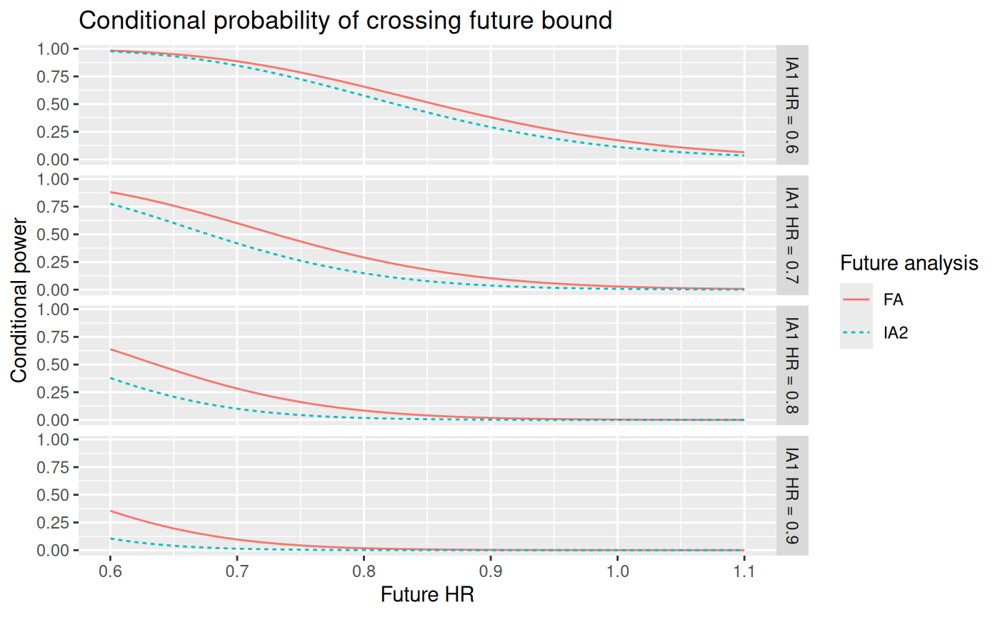

Conditional power
Yujie Zhao, Shiyu Zhang, and Keaven M. Anderson
Source:vignettes/articles/story-cp.Rmd
story-cp.RmdIntroduction
We provide a simple plot of conditional power at the time of interim analysis. The conditional power evaluations can be useful supportive information for boundaries determined by other methods.
Design
We consider the default design from gs_design_ahr(). We
assume enrollment will ramp-up with 25%, 50%, and 75% of the final
enrollment rate for consecutive 2 month periods followed by a steady
state 100% enrollment for another 6 months. The rates will be increased
later to power the design appropriately. However, the fixed enrollment
rate periods and relative enrollment rates will remain unchanged.
For the control group, we assume an exponential failure rate distribution with a 12 month median. We assume a hazard ratio of 1 for 4 months, followed by a hazard ratio of 0.6 thereafter. Finally, we assume a 0.001 exponential dropout rate per month for both treatment groups.
Here we implement the asymmetric 2-sided design. We will add an early futility analysis where if there is a nominal 1-sided p-value of 0.05 in the wrong direction. This might be considered a disaster check. After this point in time, there may be no perceived need for further futility analysis. For efficacy, we use alpha-spending approach with the Lan-DeMets spending function to approximate O’Brien-Fleming bounds with one-sided Type I error \(\alpha = 0.025\).
enroll_rate <- define_enroll_rate(
duration = c(2, 2, 2, 6),
rate = (1:4) / 4)
fail_rate <- define_fail_rate(
duration = c(4, Inf),
fail_rate = log(2) / 12,
hr = c(1, .6),
dropout_rate = .001)
x <- gs_design_ahr(
alpha = 0.025,
beta = 0.15,
enroll_rate = enroll_rate,
fail_rate = fail_rate,
analysis_time = c(16, 26, 36),
upper = gs_spending_bound,
upar = list(sf = sfLDOF, total_spend = 0.025),
test_upper = c(FALSE, TRUE, TRUE),
lower = gs_b,
lpar = c(qnorm(.05), -Inf, -Inf)) |> to_integer()
# Round analysis time to nearest month
x$analysis$time <- round(x$analysis$time)
x |> gs_bound_summary() |> gt()| Analysis | Value | Efficacy | Futility |
|---|---|---|---|
| IA 1: 49% | Z | NA | -1.6449 |
| N: 388 | p (1-sided) | NA | 0.9500 |
| Events: 138 | ~HR at bound | NA | 1.3232 |
| Month: 16 | P(Cross) if HR=1 | NA | 0.0500 |
| P(Cross) if AHR=0.81 | NA | 0.0020 | |
| IA 2: 80% | Z | 2.2420 | NA |
| N: 388 | p (1-sided) | 0.0125 | NA |
| Events: 227 | ~HR at bound | 0.7426 | NA |
| Month: 26 | P(Cross) if HR=1 | 0.0125 | NA |
| P(Cross) if AHR=0.72 | 0.5896 | NA | |
| Final | Z | 2.0263 | NA |
| N: 388 | p (1-sided) | 0.0214 | NA |
| Events: 282 | ~HR at bound | 0.7856 | NA |
| Month: 36 | P(Cross) if HR=1 | 0.0250 | NA |
| P(Cross) if AHR=0.69 | 0.8501 | NA |
Update design at time of interim analysis
Assume there are 145 instead of the planned 138 events at the first IA. Assume further there are 90 events observed within 4 months of subject randomization, and 55 events more than 4 months after randomization. The IA1 blinded estimate of minus the average log hazard ratio (-log(AHR)) based on the original assumptions of HR = 1 for 4 months and 0.6 thereafter is computed as follows:
For IA alpha spending, we take the minimum of planned and actual information fraction, allocating remaining \(\alpha\) to the FA. Note that in the following, the calendar time of analysis is assumed to be the same as in the planned design. Also, the effect size and event counts at analyses after IA1 are assumed the same as at the time of design unless otherwise specified by the user. Just as an example, we assume the actual timing of IA1 is at 17 months after study start. We update the design bounds as follows:
ustime <- x$analysis$info_frac
ustime[1] <- min(145, x$analysis$event[1]) / max(x$analysis$event)
xu <- gs_update_ahr(
x = x,
ustime = ustime,
event_tbl = data.frame(analysis = c(1, 1), event = c(90, 55)))
xu$analysis$time <- c(17, x$analysis$time[2:3])
xu |> gs_bound_summary() |> gt()| Analysis | Value | Efficacy | Futility |
|---|---|---|---|
| IA 1: 51% | Z | Inf | -1.6449 |
| N: 388 | p (1-sided) | 0.0000 | 0.9500 |
| Events: 145 | ~HR at bound | 0.0000 | 1.3142 |
| Month: 17 | P(Cross) if HR=1 | 0.0000 | 0.0500 |
| P(Cross) if AHR=0.82 | 0.0000 | 0.0025 | |
| IA 2: 80% | Z | 2.2509 | -Inf |
| N: 388 | p (1-sided) | 0.0122 | 1.0000 |
| Events: 227 | ~HR at bound | 0.7417 | Inf |
| Month: 26 | P(Cross) if HR=1 | 0.0122 | 0.0500 |
| P(Cross) if AHR=0.72 | 0.5960 | 0.0025 | |
| Final | Z | 2.0229 | -Inf |
| N: 388 | p (1-sided) | 0.0215 | 1.0000 |
| Events: 282 | ~HR at bound | 0.7859 | Inf |
| Month: 36 | P(Cross) if HR=1 | 0.0250 | 0.0500 |
| P(Cross) if AHR=0.69 | 0.8555 | 0.0025 |
Testing and conditional power
We assume possible IA1 observed HR values of 0.6, 0.7, 0.8, and 0.9.
We compute the conditional power at IA2 and FA given the IA1 observed HR
and observed blinded events. The function gsDesign::hrn2z()
translates a hazard ratio and number of events into an approximate
corresponding Z-value, using the Schoenfeld approximation.
We demonstrate a conditional power plot that may be of some use. The conditional power ignores future interim bounds and targets the probability of crossing the final efficacy bound given the IA1 Z-value. Assuming a future HR between IA1 and FA from 0.6 to 1.1, we translate the HR to standardized effect size as shown below.
future_hr <- seq(0.6, 1.1, .01)
future_theta <- -log(future_hr) * sqrt(x$input$ratio / (1 + x$input$ratio)^2)For each combination of future HR and currently observed HR, we
calculate the simple conditional power via the gs_cp_npe()
function for both IA2 and the final analysis.
ia2_cp <- NULL
fa_cp <- NULL
q_e <- x$input$ratio / (1 + x$input$ratio)
# calculate IA2 conditional power/error
for (i in seq_along(future_theta)) {
for (j in seq_along(ia1_z)) {
# conditional power
cp <- gs_cp_npe(
theta = c(ia1_theta, future_theta[i]),
info = c(145, x$analysis$event[2]) * q_e * (1- q_e),
a = ia1_z[j],
b = xu$bound$z[xu$bound$analysis == 2 & xu$bound$bound == "upper"])
ia2_cp_new <- tibble(future_analysis = "IA2",
future_hr = future_hr[i],
current_hr = paste0("IA1 HR = ", ia1_hr[j]),
cond_prob = cp)
ia2_cp <- rbind(ia2_cp, ia2_cp_new)
}
}
# calculate FA conditional power
for (i in seq_along(future_theta)) {
for (j in seq_along(ia1_z)) {
cp <- gs_cp_npe(
theta = c(ia1_theta, future_theta[i]),
info = c(145, x$analysis$event[3]) * q_e * (1- q_e),
a = ia1_z[j],
b = xu$bound$z[xu$bound$analysis == 3 & xu$bound$bound == "upper"])
fa_cp_new <- tibble(future_analysis = "FA",
future_hr = future_hr[i],
current_hr = paste0("IA1 HR = ", ia1_hr[j]),
cond_prob = cp)
fa_cp <- rbind(fa_cp, fa_cp_new)
}
}The red/blue line shows the conditional probability of crossing FA/IA2 efficacy bound.
# plot the conditional power
ggplot(data = rbind(ia2_cp, fa_cp),
aes(x = future_hr, y = cond_prob,
color = future_analysis, linetype = future_analysis)) +
geom_line() +
facet_grid(current_hr ~ .) +
ggtitle("Conditional probability of crossing future bound") +
xlab("Future HR") +
ylab("Conditional power") +
labs(color = "Future analysis", linetype = "Future analysis")
Assumptions used to plot the above conditional power
- We assume there are 145 observed at IA1, with 90 events observed during the first 4 months since randomization when HR = 1, and 55 events after month 4 when HR = 0.6.
- Based on the above assumed blinded event, the IA1 blinded treatment
effect is estimated by
-sum(log(c(1, 0.6)) * c(90, 55)) / 145, and the IA1 statistical information is estimated as 145/4. - The statistical information of future analysis is under the null hypothesis, i.e., event/4 for equal randomization.
- Given the IA1 observed HR, the IA1 Z-score is calculated using the Schoenfeld approximation.
- Conditional power for future analyses ignores intervening interim analyses.